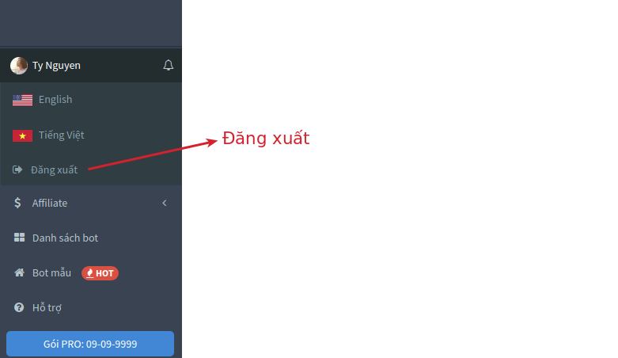

Bot không hoạt động?
Thông thường trong tất cả các trường chỉ cần Làm mới quyền thì bot sẽ hoạt động trở lại. Nhưng nếu bot vẫn không hoạt động thì cần đọc tiếp cách khắc phục ở nội dung bên dưới.
1. Nguyên nhân
Có rất nhiều nguyên nhân khiến bot không hoạt động, gồm:
- Bạn đã tắt bot tại menu Cài đặt hoặc ngoài Danh sách bot.
- Bạn không phải là admin của fanpage tích hợp bot.
- Bạn vừa đổi mật khẩu facebook. Bạn bị facebook checkpoint.
- Bạn chưa Đăng trang trong Cài đặt fanpage.
- Bị chặn tin nhắn từ khách hàng.
- Bạn lỡ tay cài đặt app AhaChat thành Secondary Receiver.
- Bạn đang bật "Gửi tin trả lời nhanh cho bất kỳ ai nhắn tin cho Trang".
- Bạn đã sử dụng hết api do FB cấp trong vòng 24 giờ.
- Bạn bị FB chặn tính năng gửi tin nhắn hoặc chưa Làm mới quyền (mã #2022).
Bạn nên vào menu Cài đặt > Logs để xem thông tin chi tiết lỗi cũng như đăng ký nhận thông báo lỗi về kênh Messenger và Instagram của mình.
2. Chú ý
- Đối với trường hợp (1), bot sẽ không tự động trả lời khách hàng nữa vì bạn đã tắt chức năng này rồi.
- Đối với trường hợp (2), (3) và (4), bot sẽ không tự động trả lời và thu thập khách hàng. Cho nên với trường hợp này bạn cần phải khắc phục ngay lập tức.
3. Cách khắc phục
3.1 Bạn đã tắt bot tại menu Cài đặt hoặc ngoài Danh sách bot
Đối trường hợp này thì bạn phải vào menu Cài đặt và bật bot lên lại
3.2 Bạn không phải là admin của fanpage tích hợp bot
Đối với trường hợp này thì bạn phải vào Vai trò trên trang fanpage và chắc chắn rằng bạn là Quản trị viên.
Nếu gặp lỗi
(Hoặc)
Thì bạn phải vào Cài đặt page, xem mình có phải là Quản trị viên hay không? (nếu ko phải thì phải set lại quyền Quản trị viên)
Sau đó Đăng xuất khỏi AhaChat, rồi Đăng nhập lại và bấm vào nút Làm mới quyền.
3.3 Bạn vừa đổi mật khẩu facebook. Bạn bị facebook checkpoint
Đối với trường hợp (3) thì bạn phải vào Triển khai và bấm vào nút Làm mới quyền.
Nếu không thể Làm mới quyền vì màn hình xuất hiện thông báo đỏ thì vui lòng Đăng xuất AhaChat rồi Đăng nhập trở lại.

3.4 Bạn chưa Đăng trang trong Cài đặt fanpage
Đối với trường hợp chưa Đăng trang này thì bạn vào Cài đặt fanpage và thay đổi thành đăng trang.
3.5 Bạn đang chặn tin nhắn từ khách hàng
Đối với trường hợp chặn tin nhắn từ khách hàng thì bạn phải hủy chặn bằng cách tích vào ô "Cho phép mọi người liên hệ với Trang của tôi".
3.6 Bạn lỡ tay cài đặt app AhaChat thành Secondary Receiver
Đối với trường hợp cài đặt sai app trên fanpage (5) thì vào Cài đặt fanpage, chọn [Nhắn tin nâng cao > Cài đặt ứng dụng] như hình dưới.
Hoặc tốt nhất là bạn nên xóa các ứng dụng chatbot khác
3.7 Bạn đang bật "Gửi tin trả lời nhanh cho bất kỳ ai nhắn tin cho Trang"
Đối với trường hợp đang bật "Gửi tin trả lời nhanh..." thì vào Cài đặt > Nhắn tin và tắt nó đi
3.8 Bạn đã sử dụng hết api do FB cấp trong vòng 24 giờ
Đối với trường hợp vượt quá số lượng API được FB cấp trong vòng 24h thì bạn phải chờ 24h sau để được cấp lại. Đây là cách duy nhất để xử lý trường hợp này.
Chú ý là nếu muốn được FB cấp nhiều API thì phải làm sao để khách hàng nhắn tin trở lại cho bot. Và cách hiệu quả nhất là tạo minigames để kích thích khách hàng tương tác với bot.
API được cấp tính như thế nào?
- API là gì? Theo cách dễ hiểu, khi bạn gửi 1 tin nhắn đến người dùng thì được tính là sử dụng 1 API (1 cuộc gọi API lên Facebook). Nếu page đạt đến ngưỡng Limit API thì Page đó bị sập hoàn toàn (từ việc gửi tin nhắn, comment, like...). Bị Facebook chặn toàn bộ.
- API từ đâu mà ra? API từ các ứng dụng bạn đang sử dụng, nếu Page bạn càng cài đặt nhiều ứng dụng thì các ứng dụng sẽ tranh nhau gửi API lên Facebook, dẫn tới việc Page sẽ chạm đễn ngưỡng giới hạn API => Page sập !
- Bao lâu thì ngưỡng giới hạn API được chạy lại! Facebook mỗi 1 tiếng sẽ cập nhật lại, nếu bạn có thêm người dùng mới thì Facebook sẽ cộng thêm số lượng cuộc gọi API và hiệu lực trong 24 giờ.
- Làm sao để được cộng API và cộng bao nhiêu? Cứ mỗi 24 giờ có 1 người tương tác (like, comment, share, inbox...) với Page thì Page sẽ được cộng 4800 API. Ví dụ 1 ngày có 100 người tương tác với Page thì trong 24h Page đó sẽ được sử dụng tối đa 480.000 API.
- Page có 100k inbox khách hàng thì có được tính API ko? Câu trả lời là không, API chỉ tính khi người dùng tương tác lại. Vậy ví dụ như sau: Nếu 1 ngày bạn có 10 người tương tác ( tương đương 10 * 4800 = 48,000 API) trong 1 page 100k inbox. Giả sử, bạn tiến hành gửi hàng loạt đến 100k người. => tương đương 100.000 API. Khi đó bạn gửi đến người thứ 48,000 thì ngay lập tức Facebook sẽ chạn từ người thứ 48,001 -> 100.000
3.9 Bạn bị FB chặn tính năng gửi tin nhắn (mã #2022)
Đây là trường hợp nặng nhất, page của bạn đã bị FB chặn tính năng gửi tin nhắn -> Cách duy nhất để giải quyết tình trạng này là Kháng nghị.
Trên FB sẽ hiện thông báo
Trên AhaChat sẽ hiện thông báo
Bạn phải vào Cài đặt > Hộp thư hỗ trợ về Trang để kháng nghị.
Nội dung kháng nghị có thể tham khảo bên dưới:
Bạn có bất kỳ câu hỏi nào liên quan đến bot không hoạt động trong AhaChat? Bạn muốn khởi chạy chiến dịch tiếp cận khách hàng của mình bằng Chatbot với một số lời khuyên chuyên môn từ Đối tác tiếp thị của Facebook? Đừng ngần ngại liên hệ với chúng tôi để có câu trả lời nhanh nhất và hiệu quả nhất! Tận hưởng công cụ chatbot miễn phí của chúng tôi mà không cần phải trả bất kỳ chi phí nào!